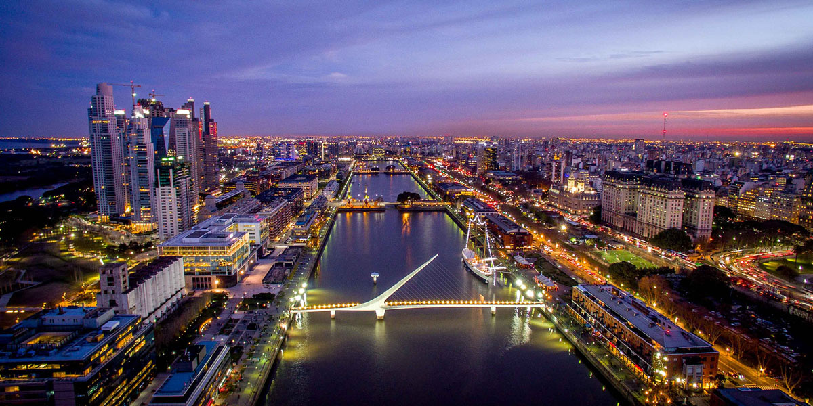

Descripción
Puerto Madero es un barrio exclusivo y moderno ubicado en la Comuna 1 de Buenos Aires, junto al Río de la Plata. Reconocido por su arquitectura contemporánea, sus calles con nombres de mujeres históricas de Argentina y su prestigio como centro financiero, residencial y gastronómico. Es un símbolo del renacimiento urbano de la ciudad, combinando lujo, diseño y acceso a servicios de alta gama. Su desarrollo transformó una zona industrial abandonada en un polo de atracción turística y empresarial. Puerto Madero es el barrio más moderno y elegante de Buenos Aires, ideal para caminar entre diques, rascacielos y áreas verdes. Imprescindibles son cruzar el Puente de la Mujer, visitar la Fragata Sarmiento, pasear por la Reserva Ecológica, disfrutar de su gastronomía y el ambiente nocturno.
